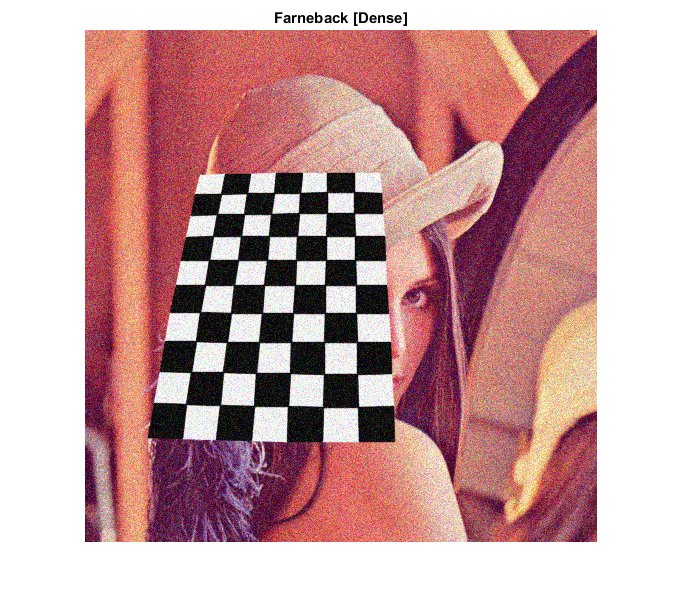
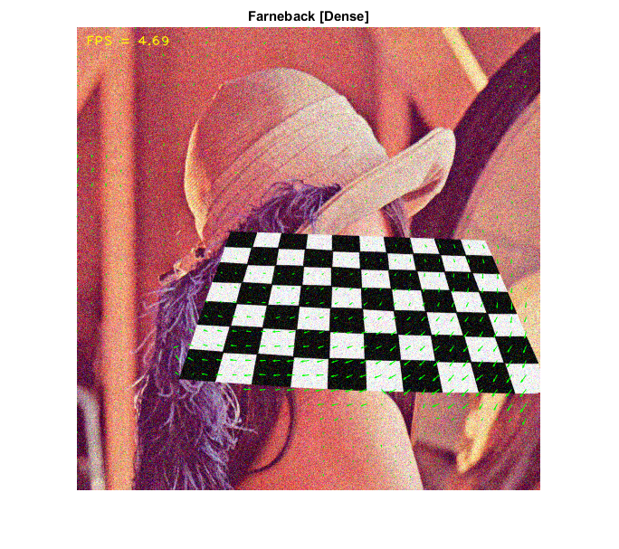

Farneback Optical Flow
This program demonstrates dense optical flow algorithm by Gunnar Farneback, mainly the function cv.calcOpticalFlowFarneback. It captures from the camera by default.
Sources:
Contents
Input video
setup video capture
cap = createVideoCapture([], 'chess'); pause(1); assert(cap.isOpened(), 'Could not initialize capturing');
grab first frame
frame = cap.read(); assert(~isempty(frame), 'Could not read frame'); prev = cv.cvtColor(frame, 'RGB2GRAY');
Prepare
grid over which to plot vector field
step = 16; % subsample in x/y directions for less dense plot
sz = size(frame);
xstep = 1:step:sz(2);
ystep = 1:step:sz(1);
[X,Y] = meshgrid(xstep, ystep);plot
out = frame; hImg = imshow(out); hold on hQ = quiver(X(:), Y(:), X(:)*0, Y(:)*0, 0, 'Color','g'); hold off, title('Farneback [Dense]')
Main loop
counter = 0; tid = tic(); while ishghandle(hImg) % grab frame counter = counter + 1; frame = cap.read(); if isempty(frame), break; end % calculate optical flow % (a 2-channel array with optical flow vectors (u,v)) next = cv.cvtColor(frame, 'RGB2GRAY'); flow = cv.calcOpticalFlowFarneback(prev, next, ... 'Levels',3, 'WinSize',15, 'Iterations',3, 'PolySigma',1.2); % plot optical flow map U = flow(ystep,xstep,1); V = flow(ystep,xstep,2); set(hQ, 'UData',U(:), 'VData',V(:)); % show output + FPS out = cv.putText(out, sprintf('FPS = %.2f', counter/toc(tid)), [10 20], ... 'FontFace','HersheyPlain', 'LineType','AA', 'Color',[255 255 0]); set(hImg, 'CData',out); drawnow; % next iteration out = frame; prev = next; end cap.release(); % close camera feed